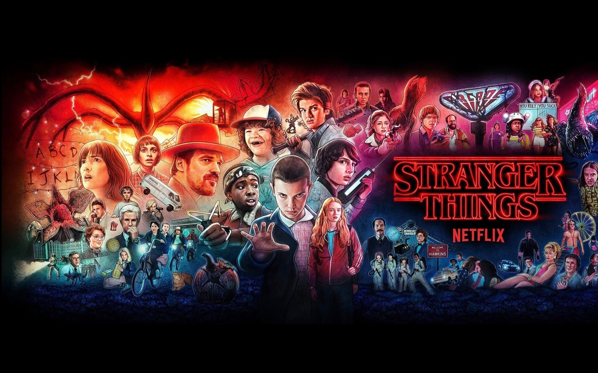

FRIENDS
TV Series .
1994–2004 .
TV-14 .
22m Comedy - Romance Creators: David Crane & Marta Kauffman
Friends is an American television sitcom created by David Crane and Marta Kauffman, which aired on NBC from September 22, 1994, to May 6, 2004, lasting ten seasons. With an ensemble cast starring Jennifer Aniston,
Courteney Cox, Lisa Kudrow, Matt LeBlanc, Matthew Perry and David Schwimmer, the show revolves around six friends in their 20s and 30s who live in Manhattan, New York City. The series was produced by Bright/Kauffman/Crane Productions,
in association with Warner Bros. Television. The original executive producers were Kevin S. Bright, Kauffman, and Crane.
Kauffman and Crane began developing Friends under the working title Insomnia Cafe between November and December 1993. They presented the idea to Bright, and together they pitched a seven-page treatment of the show to NBC. After several
script rewrites and changes, including title changes to Six of One and Friends Like Us, the series was finally named Friends.
Filming took place at Warner Bros. Studios in Burbank, California. The show ranked within the top ten of the final television season ratings; it ultimately reached the number-one spot in its eighth season. The series finale aired on May 6, 2004,
and was watched by around 52.5 million American viewers, making it the fifth-most-watched series finale in television history and the most-watched television episode of the 2000s.
Friends received acclaim throughout its run, becoming one of the most popular television shows of all time.The series was nominated for 62 Primetime Emmy Awards, winning the Outstanding Comedy Series award in 2002 for its eighth season. The show ranked no. 21
on TV Guide's 50 Greatest TV Shows of All Time, and no. 5 on Empire magazine's The 50 Greatest TV Shows of All Time. In 1997, the episode "The One with the Prom Video" was ranked no. 100 on TV Guide's 100 Greatest Episodes of All-Time.
In 2013, Friends ranked no. 24 on the Writers Guild of America's 101 Best Written TV Series of All Time, and no. 28 on TV Guide's 60 Best TV Series of All Time. The sitcom's cast members returned for a reunion special aired on HBO Max on May 27, 2021.
|
GAME OF THRONES TV Series .
2011–2019 .
TV-MA .
57m
Action - Adventure - Drama Creators:
David Benioff & D.B. Weiss
Game of Thrones is an American fantasy drama television series created by David Benioff and D. B. Weiss for HBO. It is an adaptation of A Song of Ice and Fire, a series of fantasy novels by George R. R. Martin,
the first of which is A Game of Thrones. The show was shot in the United Kingdom, Canada, Croatia, Iceland, Malta, Morocco, and Spain. It premiered on HBO in the United States on April 17, 2011, and concluded on May 19, 2019,
with 73 episodes broadcast over eight seasons.
Set on the fictional continents of Westeros and Essos, Game of Thrones has a large ensemble cast and follows several story arcs throughout the course of the show. The first major arc concerns the Iron Throne of the Seven Kingdoms of Westeros
through a web of political conflicts among the noble families either vying to claim the throne or fighting for independence from whoever sits on it. A second focuses on the last descendant of the realm's deposed ruling dynasty, who has been
exiled to Essos and is plotting to return and reclaim the throne. The third follows the Night's Watch, a military order defending the realm against threats from beyond Westeros's northern border.
Game of Thrones attracted a record viewership on HBO and has a broad, active, and international fan base. Critics have praised the series for its acting, complex characters, story, scope, and production values, although its frequent use of nudity and violence
has been subject to criticism. The final season received significant critical backlash for its reduced length and creative decisions, with many considering it a disappointing conclusion. The series received 59 Primetime Emmy Awards, the most by a drama series,
including Outstanding Drama Series in 2015, 2016, 2018 and 2019. Its other awards and nominations include three Hugo Awards for Best Dramatic Presentation, a Peabody Award, and five nominations for the Golden Globe Award for Best Television Series – Drama.
A prequel series, House of the Dragon, premiered on HBO in 2022.
|
DARK TV Series .
2017–2020 .
TV-MA .
1h
Crime - Drama - Sifi - Mystery
Creators:
Baran bo Odar & Jantje Friese
Dark is a German science fiction thriller television series co-created by Baran bo Odar and Jantje Friese. It ran for three seasons from 2017 to 2020.
The story follows characters from the fictional village of Winden, Germany, as they pursue the truth in the aftermath of a child's disappearance.
They follow connections between four estranged families to unravel a sinister time travel conspiracy which spans several generations.
The series explores the existential implications of time and its effect on human nature. It features an ensemble cast.
Dark debuted on 1 December 2017 on Netflix; it is the service's first German-language original series. The second season was released on 21 June 2019,
while the third and final season was released on 27 June 2020.
Dark received critical acclaim, with praise for its tone, visuals, acting, casting, musical score, and the ambition and complexity of its narrative.
The series' ending also received critical praise, with many calling it a "satisfying" conclusion. In 2021, the BBC ranked the series as the 58th greatest
TV series of the 21st century.
|

STRAINGER THINGSTV series . 2016- . TV-14 . 51m
Drama - Fantasy - Horror Director: The Duffer Brothers
Stranger Things is an American science fiction horror drama television series created by the Duffer Brothers, who also serve as showrunners and are executive producers along with Shawn Levy and Dan Cohen.
Produced by Monkey Massacre Productions and Levy's 21 Laps Entertainment, the first season was released on Netflix on July 15, 2016. Its second, third, and fourth seasons followed in October 2017, July 2019,
and May and July 2022, respectively. In February 2022, the series was renewed for a fifth and final season.
Set in the 1980s, primarily in the fictional town of Hawkins, Indiana, the series centers on a number of mysteries and supernatural events occurring around the town and their impact on an ensemble of child and adult characters.
It stars Winona Ryder, David Harbour, Finn Wolfhard, Millie Bobby Brown, Gaten Matarazzo, Caleb McLaughlin, Natalia Dyer, Charlie Heaton, Cara Buono, Matthew Modine, Noah Schnapp, Sadie Sink, Joe Keery, Dacre Montgomery, Sean Astin, Paul Reiser,
Maya Hawke, Priah Ferguson, and Brett Gelman.
The Duffer Brothers developed Stranger Things as a mix of investigative drama and supernatural elements portrayed with horror and childlike sensibilities, while infusing references to the pop culture of the 1980s. Several thematic and directorial elements were inspired
by the works of Steven Spielberg, John Carpenter, David Lynch, Stephen King, Wes Craven and H. P. Lovecraft. They also took inspiration from experiments conducted during the Cold War and conspiracy theories involving secret government experiments.
One of Netflix's flagship series, Stranger Things has attracted record viewership on the streaming platform. The series has been critically acclaimed for its characterization, atmosphere, acting, soundtrack, directing, writing, and homages to 1980s films. It has received numerous awards
and nominations, including nominations from the Golden Globe Awards, British Academy Television Awards, Directors Guild of America Awards, Writers Guild of America Awards, and Grammy Awards, as well as wins from the Primetime Emmy Awards, Screen Actors Guild Awards, American Film Institute, Critics'
Choice Television Awards, and People's Choice Awards.
|